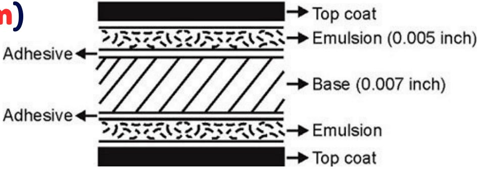
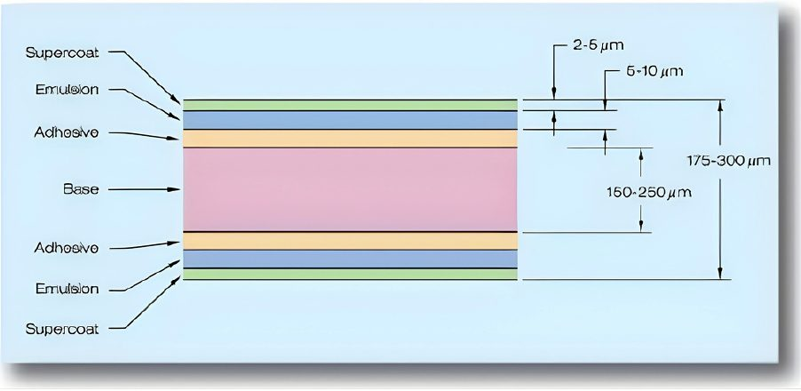
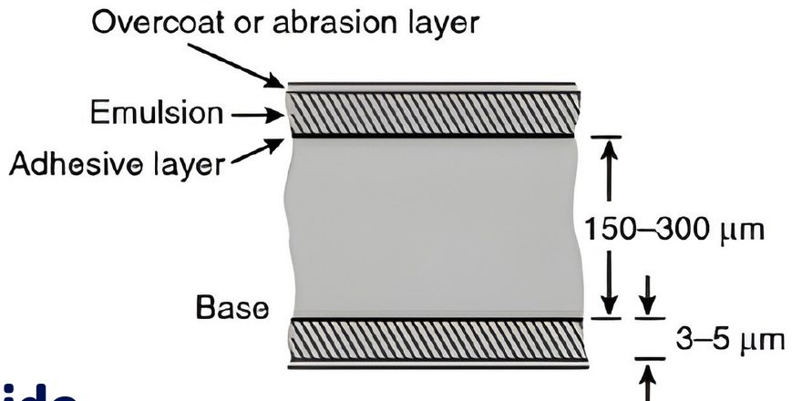
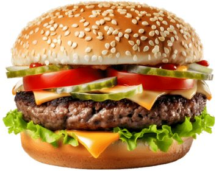
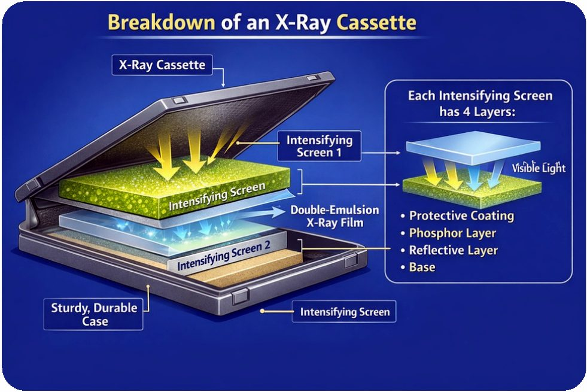
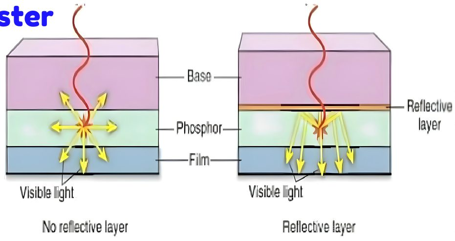
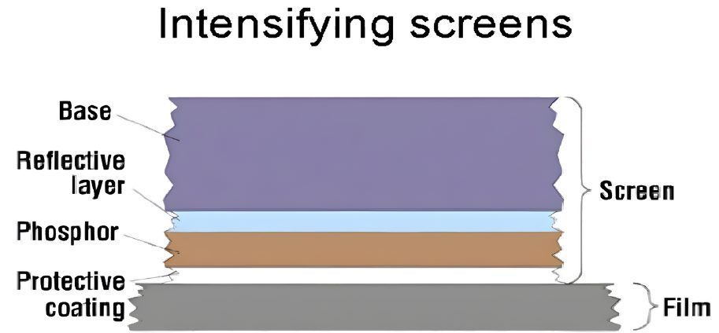
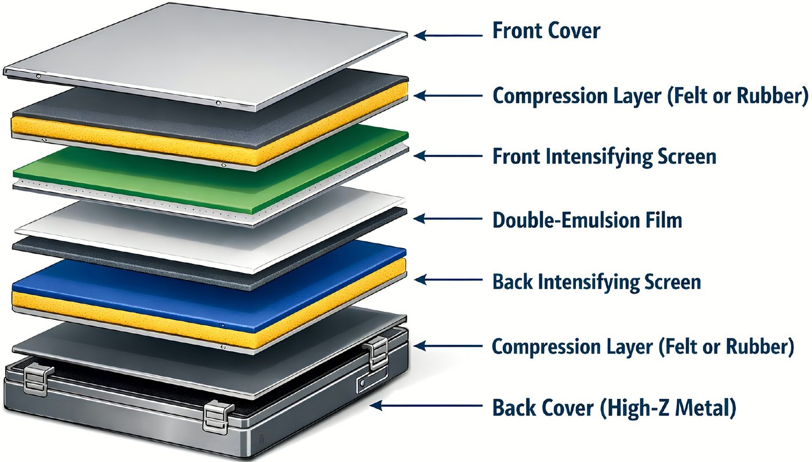

تركيب الفلم والشاشات المقوّية (التجربة 4)Construction of Film and Intensifying Screens — Fourth Experiment in Practice
عملي · م04 · 2.8 دقيقةأقسام المحاضرة (5)
تركيب الفيلم الشعاعيFilm Construction
Radiographic film has two main components:
يتكوّن الفيلم الشعاعي من مكوّنين رئيسيين:
- 1. Baseالقاعدة
- 2. Emulsion (usually coated on both sides →double-emulsion film)المستحلب (يُطلى عادةً على الوجهين ← فيلم مزدوج المستحلب).
الطبقة اللاصقةAdhesive layer
- • A thin layer between the base and emulsion.طبقة رقيقة بين القاعدة والمستحلب.
- • Ensures strong bondingتضمن التصاقاً قوياً.
الطلاء الواقي العلويSupercoating
- • A protective gelatin layer covering the emulsion.طبقة جيلاتين واقية تغطّي المستحلب.
- • Film thickness: 150–300 µm (0.15–0.3 mm)سُمك الفيلم: 150–300 ميكرومتر (0.15–0.3 مم).

المستحلب وبلورات هاليد الفضةEmulsion & Silver Halide Crystals
The functional part of the film where x-rays or light interact.
المستحلب هو الجزء الفعّال من الفيلم الذي تتفاعل فيه الأشعة السينية أو الضوء.
Contains :
ويحتوي على:
- 1. gelatinالجيلاتين
- 2. silver halide crystals.بلورات هاليد الفضة.
- • Gelatin is transparent and porous to allow chemical penetration.الجيلاتين شفّاف ومسامي ليسمح بنفاذ المواد الكيميائية.
- • Main function: support and uniformly distribute silver halide crystals.وظيفته الرئيسية: دعم بلورات هاليد الفضة وتوزيعها بانتظام.
بلورات هاليد الفضةSilver halide crystals
- • Active imaging ingredient.المكوّن الفعّال المكوِّن للصورة.
- • Typically: 95% silver bromide + 5% silver iodide.عادةً: 95% برومايد الفضة + 5% يوديد الفضة.


الشاشات المقوّية: الطبقتان الأولى والثانيةIntensifying Screens: Protective Coating & Phosphor Layer
- • Radiographic intensifying screens are flexible sheets placed inside cassettes.الشاشات المقوّية الشعاعية صفائح مرنة توضع داخل Cassette (علبة حاملة للفيلم والشاشات).
- • The film is usually sandwiched between two screens (double-emulsion film).يوضع الفيلم عادةً بين شاشتين (فيلم مزدوج المستحلب).
- • Each screen has four main layers:لكل شاشة أربع طبقات رئيسية:
1. الطلاء الواقي1. Protective Coating
- • Thickness: 15–25 µmالسُمك: 15–25 ميكرومتر.
- • Transparent layer closest to the filmطبقة شفّافة هي الأقرب إلى الفيلم.
- • Protects the screen from scratchesتحمي الشاشة من الخدوش.
2. طبقة الفوسفور2. Phosphor Layer
- • Thickness: 150–300 µmالسُمك: 150–300 ميكرومتر.
- • The active layerالطبقة الفعّالة.
- • Converts x-ray energy into visible lightتحوّل طاقة الأشعة السينية إلى ضوء مرئي.
- • Main source of image formationالمصدر الرئيسي لتكوّن الصورة.


الشاشات المقوّية: الطبقة العاكسة والقاعدةIntensifying Screens: Reflective Layer & Base
3. الطبقة العاكسة3. Reflective Layer
- • Thickness: ~25 µmالسُمك: نحو 25 ميكرومتر.
- • Made of shiny materials: magnesium oxide or titanium dioxide Reflects scattered light back toward the film to increase efficiencyتُصنع من مواد لامعة: أكسيد المغنيسيوم أو ثاني أكسيد التيتانيوم، وتعكس الضوء المتشتّت عائداً نحو الفيلم لزيادة الكفاءة.
4. القاعدة4. Base
- • Thickness: ≈1 mmالسُمك: نحو 1 مم.
- • Provides mechanical supportتوفّر الدعم الميكانيكي.
- • Made of high-grade cardboard or polyesterتُصنع من كرتون عالي الجودة أو من البوليستر.


الكاسيتCassette
- • Front cover: Low-Z material (plastic/cardboard), thin to allow x-rays to pass easily.الغطاء الأمامي: مادة ذات عدد ذري منخفض (Low-Z) (بلاستيك/كرتون)، رقيق ليسمح بمرور الأشعة بسهولة.
- • Screens: Film is placed between a front screen and a back screen for maximum light production.الشاشات: يوضع الفيلم بين شاشة أمامية وشاشة خلفية لأقصى إنتاج للضوء.
- • Compression layer: Felt or rubber keeps good screen–film contact.طبقة الضغط: اللباد أو المطاط يحافظ على تماس جيد بين الشاشة والفيلم.
- • Back cover: Made of high-Z metal to absorb x-rays and prevent backscatter, which reduces image contrast.الغطاء الخلفي: يُصنع من معدن ذي عدد ذري عالٍ (High-Z) لامتصاص الأشعة ومنع الإشعاع المرتد الذي يقلّل تباين الصورة.

المحاضرة مسموعة
نص الأستاذ بالإنكليزي مثل الأصل · 2.8 دقيقة. اضغط أي جملة تسمعها، أو مصطلح منقّط تسمع لفظه ومعناه.
Film Constructionتركيب الفيلم الشعاعي
Film Construction
Radiographic film has two main components:
Base
Emulsion (usually coated on both sides →double-emulsion film)
Adhesive layer
A thin layer between the base and emulsion.
Ensures strong bonding
Supercoating
A protective gelatin layer covering the emulsion.
Film thickness: 150–300 µm (0.15–0.3 mm)
Emulsion & Silver Halide Crystalsالمستحلب وبلورات هاليد الفضة
Emulsion & Silver Halide Crystals
The functional part of the film where x-rays or light interact.
Contains :
gelatin
silver halide crystals.
Gelatin is transparent and porous to allow chemical penetration.
Main function: support and uniformly distribute silver halide crystals.
Silver halide crystals
Active imaging ingredient.
Typically: 95% silver bromide + 5% silver iodide.
Intensifying Screens: Protective Coating & Phosphor Layerالشاشات المقوّية: الطبقتان الأولى والثانية
Intensifying Screens: Protective Coating & Phosphor Layer
Radiographic intensifying screens are flexible sheets placed inside cassettes.
The film is usually sandwiched between two screens (double-emulsion film).
Each screen has four main layers:
1. Protective Coating
Thickness: 15–25 µm
Transparent layer closest to the film
Protects the screen from scratches
2. Phosphor Layer
Thickness: 150–300 µm
The active layer
Converts x-ray energy into visible light
Main source of image formation
Intensifying Screens: Reflective Layer & Baseالشاشات المقوّية: الطبقة العاكسة والقاعدة
Intensifying Screens: Reflective Layer & Base
3. Reflective Layer
Thickness: ~25 µm
Made of shiny materials: magnesium oxide or titanium dioxide Reflects scattered light back toward the film to increase efficiency
4. Base
Thickness: ≈1 mm
Provides mechanical support
Made of high-grade cardboard or polyester
Cassetteالكاسيت
Cassette
Front cover: Low-Z material (plastic/cardboard), thin to allow x-rays to pass easily.
Screens: Film is placed between a front screen and a back screen for maximum light production.
Compression layer: Felt or rubber keeps good screen–film contact.
Back cover: Made of high-Z metal to absorb x-rays and prevent backscatter, which reduces image contrast.
كل أسئلة المحاضرة: السؤال إنكليزي وتحته عربي، وكل خيار بلغتين، والجواب الصحيح معلّم ويّاه «ليش صح» · 0.3 MB
قراءة الأسئلة تحميلاضغط أي مصطلح منقّط تسمع لفظه ومعناه.